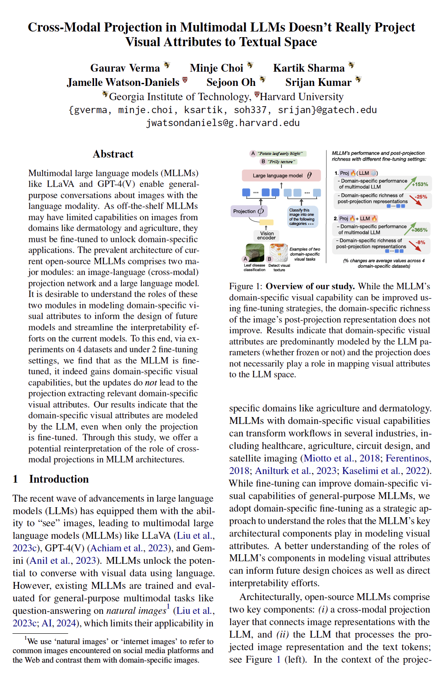

Visual Capabilities Without Richer Cross-Modal Projections
[Paper] [GitHub]
Gaurav Verma1, Minje Choi1, Kartik Sharma1,
Jamelle Watson-Daniels2, Sejoon Oh1, and Srijan Kumar1
1Georgia Institute of Technology, 2Harvard University
|
|
| Multimodal large language models (MLLMs) like LLaVA and GPT-4(V) enable general-purpose conversations about images with the language modality. As off-the-shelf MLLMs may have limited capabilities on images from domains like dermatology and agriculture, they must be fine-tuned to unlock domain-specific applications. The prevalent architecture of current open-source MLLMs comprises two major modules: an image-language (cross-modal) projection network and a large language model. It is desirable to understand the roles of these two modules in modeling domain-specific visual attributes to inform the design of future models and streamline the interpretability efforts on the current models. To this end, via experiments on $4$ datasets and under 2 fine-tuning settings, we find that as the MLLM is fine-tuned, it indeed gains domain-specific visual capabilities, but the updates do not lead to the projection extracting relevant domain-specific visual attributes. Our results indicate that the domain-specific visual attributes are modeled by the LLM, even when only the projection is fine-tuned. Through this study, we offer a potential reinterpretation of the role of cross-modal projections in MLLM architectures. |
Annotated Key Results
Use the next and previous sliders to go over the annotated version of our results and insights.|
|
|  |
Mysterious Projections: Multimodal LLMs Gain Domain-Specific Visual Capabilities Without Richer Cross-Modal Projections Gaurav Verma, Minje Choi, Kartik Sharma, Jamelle Watson-Daniels, Sejoon Oh, Srijan Kumar arXiv preprint 2402.NNNNN webpage: https://github.com/claws-lab/mllm_projections arXiv: https://arxiv.org/abs/2402.NNNNN |
Bibtex:
@article{verma2024mysterious,
|
|
|